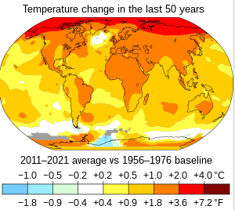

Climate Change
A complex problem, climate change has been decribed by the research manager in the World Bank’s research department Michael Toman as a 'wicked problem' ("A Wicked Problem: Controlling Global Climate Change" 2014). Rather than a simple environmental issue, climate change is a global problem that entangles itself with many fields, including economics, ecology, and global health. Ecologically, climate change threatens to upend the current interactions with the environment. With regards to economics, there has been discussion regarding developing countries, which "require increased use of energy in order to grow and improve their living standards" ("A Wicked Problem: Controlling Climate Change").
Global Health
Climate change has already had adverse effects on the world, and has the potential to worse them. In 2005, Hurricane Katrina hit the US brutally, and was "widely seen as evidence of socially induced climatic change" (Smith). Most directly, climate change can harm. The demographics that are affected most however, lay fundamentally within the bounds of structural violence. As Neil Smith states in his boldly titled article "There is No Such Thing as a Natural Disaster," those who expereince environmental calamities show the general trend that "the contours of disaster and the difference between who lives and who dies is to a greater or lesser extent a social calculus" (Smith). Within the bounds of Katrina, "the better off had cars to get out, credit cards and bank accounts for emergency hotels and supplies, their immediate families likely had resources to support their evacuation, and the wealthier also had the insurance policies for rebuilding" (Smith). In every step of the way, from the direct storm to the rebuilding, those of lower socioeconomic status were more greatly harmed. Aside from Katrina, climate change also lends itself to maladies. According to University of Wisconsin-Madison professor Johnathan Patz, heat waves will be more of a threat, "especially in urban enivronments" (Patz 2018, 2:33-2:38). The warmer climate would allow for a greater proliferation of diseases, especially in the water where the disease may survive in a warmer climate (2:47-2:49).
The Future of Climate Change in Global Health
Within the future, this trend of climate change harming those less fortunate are predicted to continue. According to an article in the peer-review journal BMJ, "This estimated environment related burden is much greater in low income than high income countries overall (25% versus 17% of deaths-and widening further to a twofold difference in percentages between the highest and lowest risk countries)" (McMichael et al. 2008, 193).
Sources
“A Wicked Problem: Controlling Global Climate Change.” World Bank. World Bank Group, July 27, 2020. https://www.worldbank.org/en/news/feature/2014/09/30/a-wicked-problem-controlling-global-climate-change.
Climate Change Is Affecting Our Health. Is There a Cure? | Jonathan Patz | TEDxOshkosh. YouTube. TEDxOshkosh, 2018. https://www.youtube.com/watch?v=r_Dpkn_wi54.
McMichael, A.J., A. Nyong, and C. Corvalan. 2008. “Global environmental change and health: impacts, inequalities, and the health sector.” BMJ: British Medical Journal 336(7637):191-194.
Smith, Neil. “There's No Such Thing as a Natural Disaster.” Social Science Research Council. Social Science Research Council, June 11, 2006. https://items.ssrc.org/understanding-katrina/theres-no-such-thing-as-a-natural-disaster/.
Image Links
- https://en.wikipedia.org/wiki/Climate_change